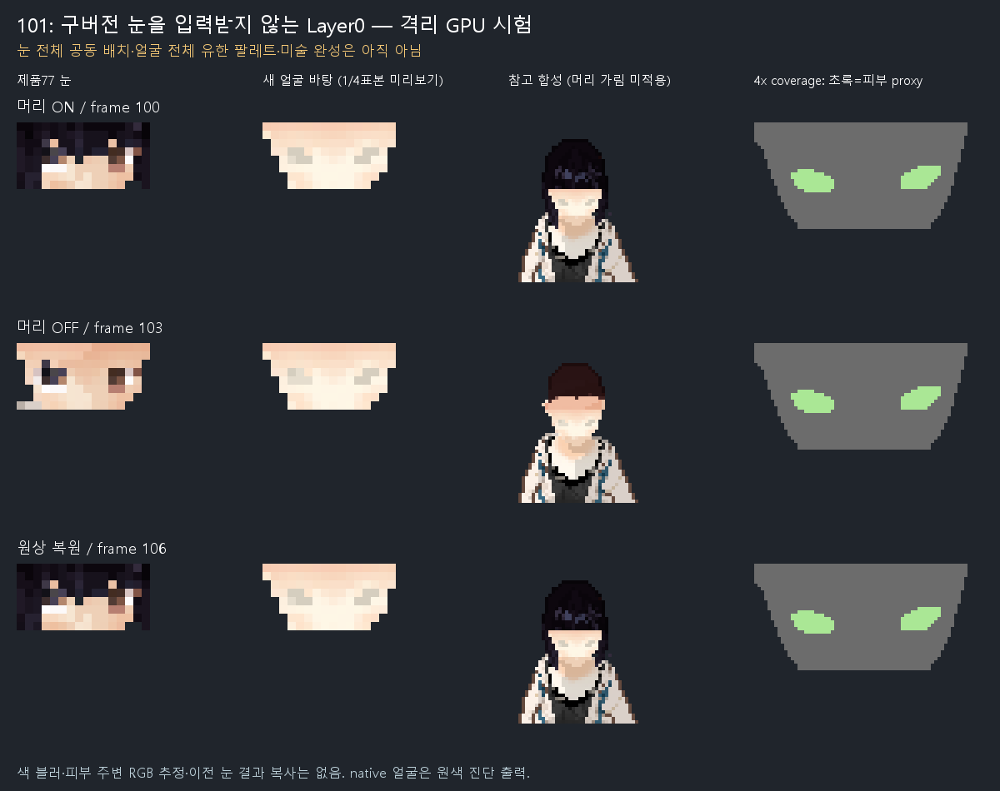

제품77 미변경. 실제 같은 카메라/프레임의 독립 GPU 패스. 원본 native 피부와 현재 변형 안구를 skin proxy로 그린다. 안구 색은 eye UV가 아니라 native 피부 경계의 원재질 UV medoid에서 공급한다. 주변 화면색 추정, 기존 눈 결과 복사, 최종 RGB×명암 연산은 socket proxy에 없다.

주의: 네 번째/세 번째 열은 각각 coverage와 진단용 바탕 미리보기다. 머리 가림·새 눈은 아직 합성하지 않았다. 원본 얼굴 부분은 unlit source 진단이며 얼굴 전체 P[region,q] 출력은 미완이다. 안구 skin proxy만 유한 팔레트 직접 조회를 검증했다. 픽셀 미리보기는4x중 선언한1표본이며 완성된 공동 cell 배치가 아니다.
3상태 모두 reference가 덮은 표본의 canvas 누락0, proxy 팔레트 밖 RGB8 0. 원상복구/RT30→30/dirty31 유지. 직렬화46개 일치, 임시 AssetImporter1개는 종료 뒤 unavailable. 실제 PlayerSettings 직렬화는 동일. 첫 시험의 카메라 연결 실패도 보존했다. 회전/Close/시간 안정성·미관 성공은 아직 주장하지 않는다.
실측 · 3프레임 원시 버퍼 · Graph 패스 · 원본 UV 피부 공급